건축기사 (2015-05-31 기출문제)
1과목: 건축계획
1. 공장건축의 레이아웃에 관한 설명으로 옳지 않은 것은?
- 장래 공장규모의 변화에 대응한 융통성이 있어야 한다.
- 제품중심의 레이아웃은 생산에 필요한 모든 공정, 기계기구를 제품의 흐름에 따라 배치한다.
- 이동식 레이아웃 방식은 사람이나 기계가 이동하여 작업하는 방식으로 제품이 크고, 수량이 적을 때 사용된다.
- 레이아웃은 공장 생산성에 미치는 영향이 크므로 공장의 배치계획, 평면계획은 이것에 부합되는 건축계획이 되어야 한다.
(정답률: 77%)

2. 미술관 전시실의 순회형식 중 갤러리 및 코리도 형식에 관한 설명으로 옳은 것은?
- 많은 전시실을 순서별로 통하여야 하는 불편이 있다.
- 필요시에는 자유로이 독립적으로 전시실을 폐쇄 할 수 있다.
- 프랭크 로이드 라이트는 이 형식을 기본으로 뉴욕 구겐하임 미술관을 설계하였다.
- 중심부에 하나의 큰 홀을 두고 그 주위에 각 전시실을 배치하여 자유로이 출입하는 형식이다.
(정답률: 77%)
3. 관학인 향교의 배치방법 중 평지에 지어지고 대성전을 앞에 배치한 것은?
- 전조후침(前朝後寢)
- 전조후시(前朝後市)
- 전묘후학(前廟後學)
- 전학후묘(前學後廟)
(정답률: 69%)
4. 극장의 평면형 중 프로시니엄형에 관한 설명으로 옳은 것은?
- 무대의 배경을 만들지 않으므로 경제성이 있다.
- 센트럴 스테이지(Central Stage)형이라고도 한다.
- 연기자가 일정한 방향으로만 관객을 대하게 된다.
- 가까운 거리에서 관람하면서 가장 많은 관객을 수용할 수 있다.
(정답률: 79%)
5. 상점의 판매방식에 관한 설명으로 옳지 않은 것은?
- 측면판매형식은 직원 동선의 이동성이 많다.
- 대면판매형식은 측면판매형식에 비해 상품 진열 면적이 넓어진다.
- 측면판매형식은 고객이 직접 진열된 상품을 접촉 할 수 있는 관계로 선택이 용이하다.
- 대면판매형식은 쇼케이스를 중심으로 판매원이 고정된 자리나 위치를 확보하는 것이 용이하다.
(정답률: 79%)
6. 병원건축의 시설규모를 결정하는 기준이 되는 것은?
- 병상수
- 병실수
- 의사수
- 간호사수
(정답률: 82%)
7. 조선시대에 田자형 주택으로 대별되는 서민주택의 지방 유형은?
- 서울지방형
- 남부지방형
- 중부지방형
- 함경도지방형
(정답률: 80%)
8. 도서관 기둥간격 결정과 가장 밀접한 관계가 있는 공간은?
- 서고
- 캐럴
- 출납실
- 시청각자료실
(정답률: 86%)
9. 호텔계획에 관한 설명으로 옳지 않은 것은?
- 시티 호텔은 대부분 고밀도의 고층형이다.
- 호텔의 적정규모는 일반적으로 시장성을 따른다.
- 리조트 호텔의 건축형식은 주변 조건에 따라 자유롭게 이루어진다.
- 커머셜 호텔은 일반적으로 리조트 호텔에 비해 넓은 공공공간(Public Space)을 갖는다.
(정답률: 80%)
10. 서양 건축양식의 시대 순서로 옳은 것은?
- 로마→로마네스크→고딕→르네상스→바로크
- 로마→로마네스크→고딕→바로크→르네상스
- 로마네스크→로마→고딕→르네상스→바로크
- 로마네스크→로마→고딕→바로크→르네상스
(정답률: 78%)
11. 엘리베이터 설치계획에 관한 설명으로 옳지 않은 것은?
- 군 관리운전의 경우 동일 군내의 서비스층은 같게 한다.
- 승객의 층별 대기시간은 평균운전간격 이상이 되게 한다.
- 서비스를 균일하게 할 수 있도록 건축물 중심부에 설치하는 것이 좋다.
- 건축물의 출입층이 2개층이 되는 경우는 각각의 교통수요량 이상이 되도록 한다.
(정답률: 86%)
12. 건축물의 에너지절약을 위한 계획 내용으로 옳지 않은 것은?
- 공동주택은 인동간격을 넓게 하여 저층부의 일사 수열량을 증대시킨다.
- 건축물의 체적에 대한 외피면적의 비 또는 연면적에 대한 외피면적의 비는 가능한 크게한다.
- 건축물은 대지의 향, 일조 및 주풍량 등을 고려하여 배치하며, 남향 또는 남동향 배치를 한다.
- 거실의 층고 및 반자높이는 실의 용도와 기능에 지장을 주지 않는 범위 내에서 가능한 낮게 한다.
(정답률: 72%)
13. 은행계획에 관한 설명으로 옳지 않은 것은?
- 고객이 지나는 동선은 가능한 짧게 한다.
- 고객과 직원간의 동선은 중복되지 않도록 한다.
- 대규모의 은행일 경우 고객 출입구는 2개소 이상으로 한다.
- 동일 목적의 고객동선은 그루핑하여 각기 요구되는 은행업무에 적합한 동선을 유도하는 것이 좋다.
(정답률: 86%)
14. 사무소 건축계획에서 개방식 배치에 관한 설명으로 옳지 않은 것은?
- 개인의 독립성 확보가 용이하다.
- 전면적을 유용하게 이용할 수 있다.
- 공간의 길이나 깊이에 변화를 줄 수 있다.
- 기본적인 자연채광에 인공조명이 필요한 형식이다.
(정답률: 87%)
15. 초등학교 저학년에 가장 권장되는 학교운영방식은?
- 달톤형
- 플래툰형
- 종합교실형
- 교과교실형
(정답률: 87%)
16. 공동주택의 단면형식에 관한 설명으로 옳지 않은 것은?
- 트리플렉스형은 듀플렉스형보다 공용면적이 크게 된다.
- 메조넷형에서 통로가 없는 층은 채광 및 통풍 확보가 가능하다.
- 플랫형은 평면구성의 제약이 적으며, 소규모의 평면계획도 가능하다.
- 스킵플로어형은 동일한 주거동에서 각기 다른 모양의 세대 배치가 가능하다.
(정답률: 66%)
17. 주택단지 안의 건축물에 설치하는 계단의 유효폭은 최소 얼마 이상이어야 하는가? (단, 공동으로 사용하는 계단의 경우)
- 45cm
- 60cm
- 120cm
- 150cm
(정답률: 85%)
18. 도서관 출납시스템 중 자유개가식에 관한 설명으로 옳은 것은?
- 도서의 유지관리가 용이하다.
- 책의 내용 파악 및 선택이 자유롭다.
- 대출절차가 복잡하고 관원의 작업량이 많다.
- 열람자는 직접 서가에 면하여 책의 표지 정도는 볼 수 있으나 내용은 볼 수 없다.
(정답률: 83%)
19. 주택 부엌의 가구배치 유형 중 병렬형에 관한 설명으로 옳은 것은?
- 작업면이 가장 넓은 배치유형으로 작업효율이 좋다.
- 연속된 두 벽면을 이용하여 작업대를 배치한 형식이다.
- 폭이 길이에 비해 넓은 부엌의 형태에 적당한 유형이다.
- 좁은 면적 이용에 효과적이므로 소규모 부엌에 주로 이용된다.
(정답률: 50%)
20. 아파트에 의무적으로 설치하여야 하는 장애인ㆍ노인ㆍ임산부 등의 편의시설에 속하지 않는 것은?
- 점자블록
- 장애인전용주차구역
- 높이 차이가 제거된 건축물 출입구
- 장애인 등의 통행이 가능한 접근로
(정답률: 77%)
2과목: 건축시공
21. 다음 공사계약방식 중 공사수행방식에 따른 분류에 해당하지 않는 것은?
- 실비정산보수가산계약
- 설계ㆍ시공분리계약
- 설계ㆍ시공일괄계약
- 턴키계약
(정답률: 76%)
22. 테라죠(Terrazzo) 현장갈기에 대한 시공 내용 중 옳지 않은 것은?
- 여름철 갈기는 3일 이상 충분히 경화시킨 다음 갈기 시작한다.
- 초벌갈기는 돌알이 균등하게 나타나도록 하고 바로 이어서 중갈기를 행한다.
- 정벌갈기는 중갈기가 끝나고 시멘트 풀먹임을 2∼3회 거듭한 후 행한다.
- 광내기 왁스칠은 시간을 두고 얇게 여러 번 행하는 것이 좋다.
(정답률: 68%)
23. 지하연속 흙막이공법인 슬러리월(Slurry Wall) 공법과의 관련성이 가장 적은 것은?
- 가이드 월(Guide Wall)
- 벤토나이트(Bentonite) 용액
- 파워 쇼벨(Power Shovel)
- 트레미 관(Tremie Pipe)
(정답률: 70%)
24. 레디믹스트 콘크리트 발주 시 호칭규격인 25-24-150 에서 알 수 없는 것은?
- 염화물함유량
- 슬럼프(Slump)
- 호칭강도
- 굵은골재의 최대치수
(정답률: 81%)
25. 시트 방수공법에 관한 설명 중 틀린 것은?
- 접착제 도포에 앞서 먼저 도포한 프라이머의 적정한 건조를 확인한다.
- 시트의 너비와 길이에는 제한이 없고, 3겹 이상 적층하여 방수하는 것이 원칙이다.
- 수용성의 프라이머는 저온시 동결피해 발생에 주의한다.
- 접착공법은 모서리부, 드레인 주변 등 특수한 부위를 먼저 세심하게 작업한다.
(정답률: 78%)
26. 시공과정 중 휴식시간 등으로 응결하기 시작한 콘크리트에 새로운 콘크리트를 이어칠 때 일체화가 저해되어 생기는 줄눈은?
- 컨스트럭션 조인트(Construction Joint)
- 익스팬션 조인트(Expansion Joint)
- 콜드 조인트(Cold Joint)
- 컨트롤 조인트(Control Joint)
(정답률: 77%)
27. 표준관입시험(SPT)에 대한 설명으로 옳은 것은?
- 점토지반에서는 표준관입시험이 불가능하다.
- 추의 낙하높이는 100cm이다.
- 지반의 전단강도를 직접 측정하는 방법이다.
- N값은 샘플러를 30cm 관입하는데 소요되는 타격회수이다
(정답률: 61%)
28. 철근콘크리트공사에서 콘크리트 이어치기에 대한 설명으로 옳지 않은 것은?
- 콘크리트의 이어치기는 원칙적으로 응력이 집중되는 곳에서 한다.
- 보는 스팬의 중앙 또는 단부의 1/4 부분에서 이어친다.
- 기둥 및 벽은 바닥슬래브 및 기초의 상단에서 이어친다.
- 캔틸레버 보는 이어치기를 하지 않고 한번에 타설한다.
(정답률: 75%)
29. 블록쌓기에 대한 설명으로 틀린 것은?
- 살두께가 큰 편을 아래로 하여 쌓는다.
- 특별한 지정이 없으면 줄눈은 10mm가 되게 한다.
- 하루의 쌓기 높이는 1.5m 이내를 표준으로 한다.
- 줄눈모르타르는 쌓은 후 줄눈누르기 및 줄눈파기를 한다.
(정답률: 74%)
30. 다음 각 건설기계와 주된 작업의 연결이 틀린 것은?
- 클램쉘 - 굴착
- 백호 - 정지
- 파워쇼벨 - 굴착
- 그레이더 - 정지
(정답률: 76%)
31. 다음 합성수지에 관한 설명으로 틀린 것은?
- 페놀수지는 접착성, 전기 절연성이 크다.
- 요소수지는 무색으로 착색이 자유롭다.
- 에폭시수지는 산 및 알칼리에 약하나 내수성이 뛰어나다.
- 실리콘수지는 내열성이 우수하고 발포보온재에 사용된다.
(정답률: 66%)
32. 콘크리트용 재료 중 시멘트에 관한 설명으로 틀린 것은?
- 중용열포틀랜드시멘트는 수화작용에 따르는 발열이 적기 때문에 매스콘크리트에 적당하다.
- 조강포틀랜드시멘트는 조기강도가 크기 때문에 한중콘크리트공사에 주로 쓰인다.
- 알칼리 골재반응을 억제하기 위한 방법으로써 내황산염포틀랜드시멘트를 사용한다.
- 조강포틀랜드시멘트를 사용한 콘크리트의 7일 강도는 보통포틀랜드시멘트를 사용한 콘크리트의 28일 강도와 거의 비슷하다.
(정답률: 73%)
33. Low-E 유리의 특징으로 틀린 것은?
- 가시광선 투과율은 맑은유리와 비교할 때 큰 차이가 난다.
- 근적외선 영역의 열선투과율은 현저히 낮다.
- 색유리를 사용했을 때보다 실내는 훨씬 밝아진다.
- 실외의 물체들이 자연색 그대로 실내로 전달된다.
(정답률: 60%)
34. 도장공사에 관한 주의사항으로 틀린 것은?
- 바탕의 건조가 불충분하거나 공기의 습도가 높을 때에는 시공하지 않는다.
- 불투명한 도장일 때에는 초벌부터 정벌까지 같은 색으로 시공해야 한다.
- 야간에는 색을 잘못 도장할 염려가 있으므로 시공하지 않는다.
- 직사광선은 가급적 피하고 도막이 손상될 우려가 있을 때에는 도장하지 않는다.
(정답률: 86%)
35. 낙관적 시간 a=4, 개연적 시간 m=7, 비관적 시간 b=8 이라고 할 때 PERT 기법에서 적용하는 예상시간은 얼마인가? (단, 단위는 주)
- 5.8주
- 6.0주
- 6.3주
- 6.7주
(정답률: 48%)
36. 알칼리 골재반응의 대책으로 적절하지 않은 것은?
- 반응성 골재를 사용한다.
- 콘크리트 중의 알칼리양을 감소시킨다.
- 포졸란 반응을 일으킬 수 있는 혼화재를 사용한다.
- 단위시멘트량을 최소화한다.
(정답률: 54%)
37. 건설공사의 품질관리와 가장 거리가 먼 것은?
- ISO 9000
- CIC
- TQC
- Control Chart
(정답률: 60%)
38. 건축물 외부에 설치하는 커튼월에 대한 설명으로 틀린 것은?
- 커튼월이란 외벽을 구성하는 비내력벽 구조이다.
- 공장에서 생산하여 반입하는 프리패브 제품이다.
- 콘크리트나 벽돌 등의 외장재에 비하여 경량이어서 건물의 전체 무게를 줄이는 역할을 한다.
- 커튼월의 조립은 대부분 외부에 대형발판이 필요하므로 비계공사를 반드시 해야 한다.
(정답률: 80%)
39. 다음 배수공법 중 중력배수공법에 해당하는 것은?
- 웰포인트 공법
- 진공압밀 공법
- 전기삼투 공법
- 집수정 공법
(정답률: 68%)
40. 다음 미장재료 중 기경성 재료로만 짝지어진 것은?
- 회반죽, 석고 플라스터, 돌로마이트 플라스터
- 시멘트 모르타르, 석고 플라스터, 회반죽
- 석고 플라스터, 돌로마이트 플라스터, 진흙
- 진흙, 회반죽, 돌로마이트 플라스터
(정답률: 74%)
3과목: 건축구조
41. 다음과 같은 사다리꼴 단면의 도심
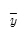
값은?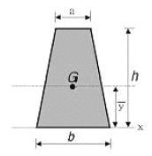
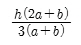
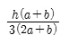
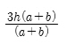
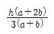
(정답률: 69%)
42. 절점 B에 외력 M=200kN ‧ m가 작용하고 각 부재의 강비가 그림과 같은 경우 MAB는?
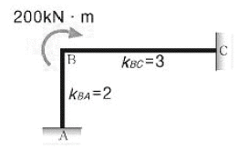
- 20kNㆍm
- 40kNㆍm
- 60kNㆍm
- 80kNㆍm
(정답률: 63%)
43. 그림과 같은 철근 콘크리트보의 균열모멘트(Mcr)값은? (단, 보통중량콘크리트 사용, fck=24MPa)
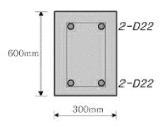
- 21.5kNㆍm
- 33.6kNㆍm
- 42.8kNㆍm
- 55.6kNㆍm
(정답률: 59%)
44. 강재의 응력-변형도 시험에서 인장력을 가해 소성상태에 들어선 강재를 다시 반대 방향으로 압축력을 작용하였을 때의 압축항복점이 소성상태에 들어서지 않은 강재의 압축항복점에 비해 낮은 것을 볼 수 있는데 이러한 현상을 무엇이라 하는가?
- 뤼더선(Luder′s Line)
- 소성흐름(Plastic Flow)
- 바우슁거 효과(Baushinger′s Effect)
- 응력집중(Stress Concentration)
(정답률: 73%)
45. 다음 그림은 고력볼트 체결부의 명칭을 나타낸 것이다. 명칭이 틀린 것은?
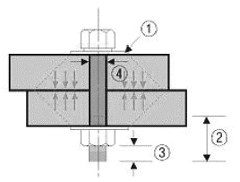
- [① 평와셔]
- [② 축부]
- [③ 여유길이]
- [④ 볼트직경]
(정답률: 70%)
46. 그림과 같은 부정정 라멘의 BMD에서 P값을 구하면?
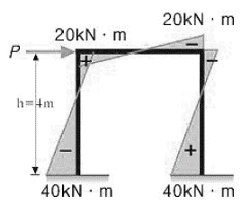
- 20kN
- 30kN
- 50kN
- 60kN
(정답률: 67%)
47. 인장철근량 As=1,500mm2인 단철근 장방향 보에서 사각형 응력분포깊이 α는 얼마인가? (단, fck=24MPa, fy=300MPa, b=300mm, d=500mm)
- 65.12mm
- 73.52mm
- 82.57mm
- 89.69mm
(정답률: 59%)
48. 다음 강종 중 건축구조용 압연강재를 나타내는 것은?
- SS400
- SM490
- SMA490
- SN490
(정답률: 71%)
49. 목구조에 대한 설명 중 틀린 것은?
- 목골구조는 건물의 뼈대는 목재로 구성하고, 벽에는 벽돌, 돌 등을 쌓아 막은 구조이다.
- 목구조는 주로 목재를 써서 뼈대를 조립한 가구식 구조를 말한다.
- 심벽 목구조는 기둥ㆍ샛기둥의 내ㆍ외면에 메탈라스 또는 철망을 치고 모르타르 등으로 마감한 구조로 기둥, 샛기둥, 가새 등은 외부에 보이지 않게 된다.
- 목재패널구조는 합판 또는 널재로 대형패널을 만들어 구조내력부재로 이용하는 목조건물의 구조법이다.
(정답률: 63%)
50. 다음 용접기호에 대한 설명으로 옳은 것은?
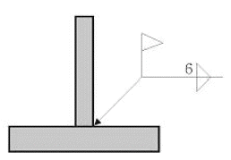
- 공장에서 용접치수 6mm로 양측에 모살용접한다.
- 현장에서 용접치수 6mm로 화살방향에 맞댐용접한다.
- 공장에서 용접치수 6mm로 화살방향에 맞댐용접한다.
- 현장에서 용접치수 6mm로 양측에 모살용접한다.
(정답률: 64%)
51. 철골주각부에 부착하는 강판으로 사이드앵글을 거쳐서 또는 직접 용접에 의해 기둥으로 부터의 응력을 베이스플레이트에 전달하기 위해 붙이는 판은?
- 스티프너
- 커버플레이트
- 윙플레이트
- 엔드탭
(정답률: 52%)
52. 단일 압축재에서 세장비를 구할 때 필요 없는 것은?
- 좌굴길이
- 단면적
- 단면2차모멘트
- 탄성계수
(정답률: 65%)
53. 트러스 해법의 기본가정으로 틀린 것은?
- 절점을 연결하는 직선은 재축과 일치한다.
- 외력은 모두 절점에 작용하는 것으로 한다.
- 부재를 연결하는 절점은 강절점으로 간주한다.
- 외력은 모두 트러스를 포함한 평면안에 있는 것으로 한다.
(정답률: 59%)
54. 다음 그림과 같은 두 개의 단순보에 크기가 (P=wL)하중이 작용할 때, A지점에서 발생하는 처짐각의 비율(가 : 나)은? (단, 부재의 EI는 일정하다.)
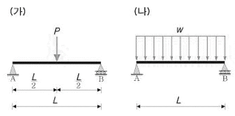
- 1.5 : 1
- 0.67 : 1
- 1 : 1.5
- 1 : 0.5
(정답률: 54%)
55. 강도설계법에서 등가응력블록을 산정할 때 사용하는 계수 β1에 대한 설명 중 틀린 것은?
- fck가 28MPa을 초과할 경우, 28MPa을 초과하는 매 1MPa의 강도에 대하여 0.007씩 β1의값을 감소시킨다.
- β1은 fck가 28MPa 이하일 경우에는 일정한 값을 갖는다.
- β1의 최대값은 0.85이다.
- β1의 최소값은 0.55이다.
(정답률: 60%)
56. 다음 모살용접부의 유효용접면적은?
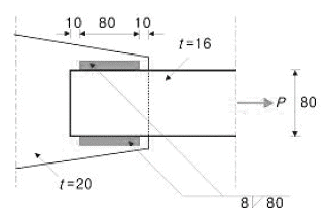
- 716.8fmm2
- 614.4mm2
- 806.4mm2
- 691.2mm2
(정답률: 59%)
57. 다음 그림에서 경간이 같은 2개의 단순보의 하중 P에 의한 처짐 y1과y2와의 비(比) 값은 얼마인가?
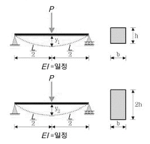
- 2:1
- 4:1
- 6:1
- 8:1
(정답률: 61%)
58. 그림과 같은 단순봉[서 반력 RA의 값은?
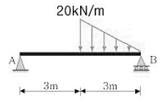
- 5kN
- 10kN
- 20kN
- 25kN
(정답률: 62%)
59. 그림과 같은 라멘 구조물의 판별은?
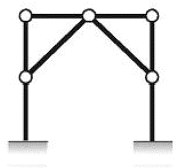
- 불안정 구조물
- 안정이며, 정정구조물
- 안정이며, 1차 부정정구조물
- 안정이며, 2차 부정정구조물
(정답률: 65%)
60. 다음과 같은 조건의 1방향 슬래브에서 처짐을 계산하지 않고 정할 수 있는 슬래브의 최소 두께는?
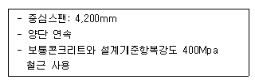
- 150mm
- 180mm
- 200mm
- 220mm
(정답률: 54%)
4과목: 건축설비
61. 다음 중 서로 상이한 실에 냉난방을 동시에 해야 하는 경우 가장 적절한 공조방식은?
- VAV방식
- CAV방식
- 유인유닛방식
- 멀티존유닛방식
(정답률: 74%)
62. 다음 중 압축기가 필요없는 냉동기는?
- 흡수식 냉동기
- 원심식 냉동기
- 회전식 냉동기
- 왕복동식 냉동기
(정답률: 71%)
63. 급수방식 중 펌프직송 방식에 대한 설명으로 옳지 않은 것은?
- 상향공급방식이 일반적이다.
- 전력공급이 중단되면 급수가 불가능하다.
- 자동제어에 필요한 설비비가 적고, 유지관리가 간단하다.
- 적절한 대수분할, 압력제어 등에 의해 에너지절약을 꾀할 수 있다.
(정답률: 65%)
64. 간선의 배선방식 중 평행식에 대한 설명으로 옳은 것은?
- 설비비가 가장 저렴하다.
- 배선 자재의 소요가 가장 적다.
- 사고의 영향을 최소화 할 수 있다.
- 전압이 안정되나 부하의 증가에 적응할 수 없다.
(정답률: 72%)
65. 공기의 건구온도와 상대습도를 알고 있을 때 습공기선도를 통해 구할 수 없는 것은?
- 엔탈피
- 절대습도
- 습구온도
- 탄산가스 함유량
(정답률: 76%)
66. 전기에 관한 기초사항으로 옳지 않은 것은?
- 전류는 발열작용, 화학작용, 자기작용을 한다.
- 병렬회로에서는 각각의 저항에 흐르는 전류의 값이 같다.
- 오옴(Ohm)의 법칙은 전압, 전류, 저항 사이의 규칙적인 관계를 나타낸다.
- 1[W]란 전압이 1[V]일 때, 1[A]의 전류가 1[s] 동안에 하는 일을 말한다.
(정답률: 65%)
67. 의복의 단열성을 나타내는 단위로서 그 값이 클수록 인체에서 발생되는 열이 주위 공기로 적게 발산되는 것을 의미하는 것은?
- clo
- dB
- NC
- MRT
(정답률: 78%)
68. 물과 오리피스가 분리되어 동파를 방지할 수 있는 스프링클러헤드로 정의되는 것은?
- 조기반응형헤드
- 건식스프링클러헤드
- 폐쇄형스프링클러헤드
- 개방형스프링클러헤드
(정답률: 60%)
69. 펌프의 양수량 10m3/min, 전양정 10m, 효율 80%일 때, 이 펌프의 소요동력은? (단, 여유율은 10%로 한다.)
- 22.5kW
- 26.5kW
- 30.6kW
- 32.4kW
(정답률: 50%)
70. 다음 중 그 값이 클수록 안전한 것은?
- 접지저항
- 도체저항
- 접촉저항
- 절연저항
(정답률: 77%)
71. 음의 세기가 10-9W/m2 일 때 음의 세기 레벨은? (단, 기준음의 세기 Io=10-12W/m2이다.)
- 3dB
- 30dB
- 0.3dB
- 0.03dB
(정답률: 57%)
72. 다음 중 운행속도가 가장 높은 엘리베이터 방식은?
- 교류 1단
- 교류 2단
- 직류 기어드
- 직류 기어레스
(정답률: 74%)
73. 배수관에 트랩을 설치하는 가장 주된 이유는?
- 배수의 동결을 막기 위하여
- 배수의 소음을 감소하기 위하여
- 배수관의 신축을 조절하기 위하여
- 하수 가스, 악취 등이 실내로 침입하는 것을 막기 위하여
(정답률: 78%)
74. 한 시간당 급탕량이 5m3일 때 급탕부하는 얼마인가? (단, 물의 비열은 4.2kJ/kgㆍK, 급탕 온도 70˚C, 급수온도 10˚C)
- 35kW
- 126kW
- 350kW
- 1,260kW
(정답률: 38%)
75. 자동화재탐지설비의 감지기 중 주위의 온도가 일정 온도 이상이 되었을 때 작동하는 것은?
- 차동식 감지기
- 정온식 감지기
- 광전식 감지기
- 이온화식 감지기
(정답률: 80%)
76. 공기조화방식 중 전공기방식에 관한 설명으로 옳지 않은 것은?
- 중간기에 외기냉방이 가능하다.
- 실의 유효스페이스가 증대된다.
- 실내공기의 질을 높일 수 있는 가능성이 크다.
- 수방식에 비해 열의 운송동력이 적게 소요된다.
(정답률: 51%)
77. 유압식 엘리베이터에 대한 설명 중 옳지 않은 것은?
- 오버헤드가 작다.
- 기계실의 위치가 자유롭다.
- 큰 적재량으로 승강행정이 짧은 경우에는 적용할 수 없다.
- 지하주차장 엘리베이터와 같이 지하층에만 운전하는 경우 적용할 수 있다.
(정답률: 54%)
78. 복사난방에 대한 설명으로 옳지 않은 것은?
- 열용량이 커서 예열시간이 짧다.
- 대류난방에 비하여 설비비가 비싸다.
- 방을 개방상태로 하여도 난방효과가 있다.
- 수직온도분포가 균일하고 실내가 쾌적하다.
(정답률: 71%)
79. 다음과 가장 관계가 깊은 것은?
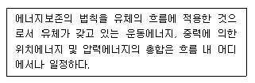
- 뉴턴의 점성법칙
- 베르누이의 정리
- 보일-샤를의 법칙
- 오일러의 상태방정식
(정답률: 77%)
80. 다음과 같은 공식을 통해 산출되는 값으로 전기설비가 어느 정도 유효하게 사용되는가를 나타내는 것은?
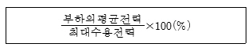
- 부하율
- 보상률
- 부등률
- 수용률
(정답률: 74%)
5과목: 건축법규
81. 건축물의 면적, 높이 및 층수 산정의 기본원칙으로 옳지 않은 것은?
- 대지면적은 대지의 수평투영면적으로 한다.
- 연면적은 하나의 건축물 각 층의 거실면적의 합계로 한다.
- 건축면적은 건축물의 외벽(외벽이 없는 경우에는 외곽 부분의 기둥)의 중심선으로 둘러싸인 부분의 수평투영면적으로 한다.
- 바닥면적은 건축물의 각 층 또는 그 일부로서 벽, 기둥 기타 이와 유사한 구획의 중심선으로 둘러싸인 부분의 수평투영면적으로 한다.
(정답률: 70%)
82. 다음 중 아파트를 건축할 수 없는 용도지역은?
- 준주거지역
- 제1종 일반주거지역
- 제2종 전용주거지역
- 제3종 일반주거지역
(정답률: 72%)
83. 기존 건축물의 내력벽, 기둥, 보를 철거하고 그 대지에 종전과 같은 규모의 범위에서 건축물을 다시 축조하는 건축행위는?
- 신축
- 증축
- 재축
- 개축
(정답률: 58%)
84. 건축법령상 고층건축물의 정의로 옳은 것은?
- 층수가 30층 이상이거나 높이가 90m 이상인 건축물
- 층수가 30층 이상이거나 높이가 120m 이상인 건축물
- 층수가 50층 이상이거나 높이가 150m 이상인 건축물
- 층수가 50층 이상이거나 높이가 200m 이상인 건축물
(정답률: 79%)
85. 지방건축위원회의 심의사항에 속하지 않는 것은?
- 건축선의 지정에 관한 사항
- 다중이용건축물의 구조안전에 관한 사항
- 특수구조건축물의 구조안전에 관한 사항
- 경관지구 내의 건축물의 건축에 관한 사항
(정답률: 48%)
86. 건축허가신청에 필요한 설계도서 중 건축계획서에 표시하여야 할 사항에 속하지 않는 것은?
- 주차장 규모
- 건축물의 층수
- 건축물의 용도별 면적
- 공개공지 및 조경계획
(정답률: 59%)
87. 허가대상 건축물이라 하더라도 미리 특별자치시장ㆍ특별자치도지사 또는 시장ㆍ군수ㆍ구청장에게 국토교통부령으로 정하는 바에 따라 신고를 하면 건축허가를 받은 것으로 보는 경우에 속하지 않는 것은? (단, 층수가 2층인 건축물의 경우)
- 바닥면적의 합계가 85m2 이내의 신축
- 바닥면적의 합계가 85m2 이내의 증축
- 바닥면적의 합계가 85m2 이내의 개축
- 연면적이 200m2 미만인 건축물의 대수선
(정답률: 59%)
88. 부설주차장의 설치대상 시설물의 종류에 따른 설치기준이 옳지 않은 것은?
- 골프장 - 1홀당 10대
- 위락시설 - 시설면적 150m2당 1대
- 판매시설 - 시설면적 150m2당 1대
- 숙박시설 - 시설면적 200m2당 1대
(정답률: 73%)
89. 국토의 계획 및 이용에 관한 법률에 따른 용도지역에서의 용적률 최대 한도 기준이 옳지 않은 것은? (단, 도시지역의 경우)
- 주거지역: 500% 이하
- 녹지지역: 100% 이하
- 공업지역: 400% 이하
- 상업지역: 1,000% 이하
(정답률: 66%)
90. 피난안전구역의 구조 및 설비에 관한 기준 내용으로 옳지 않은 것은?
- 피난안전구역의 높이는 2.1m 이상일 것
- 피난안전구역의 내부마감재료는 불연재료로 설치할 것
- 비상용승강기는 피난안전구역에서 승하차 할 수 있는 구조로 설치할 것
- 건축물의 내부에서 피난안전구역으로 통하는 계단은 피난계단의 구조로 설치할 것
(정답률: 66%)
91. 건축물에 가스, 급수, 배수, 환기설비를 설치하는 경우 건축기계설비기술사 또는 공조냉동기계기술사의 협력을 받아야 하는 대상 건축물에 속하지 않는 것은?
- 기숙사로서 해당 용도에 사용되는 바닥면적의 합계가 2,000m2인 건축물
- 판매시설로서 해당 용도에 사용되는 바닥면적의 합계가 2,000m2인 건축물
- 의료시설로서 해당 용도에 사용되는 바닥면적의 합계가 2,000m2인 건축물
- 숙박시설로서 해당 용도에 사용되는 바닥면적의 합계가 2,000m2인 건축물
(정답률: 44%)
92. 건축물의 용도변경과 관련된 시설군 중 산업 등 시설군에 속하는 건축물의 용도가 아닌 것은?
- 장례식장
- 발전시설
- 창고시설
- 자원순환관련시설
(정답률: 54%)
93. 국토의 계획 및 이용에 관한 법률상 다음과 같이 정의되는 것은?
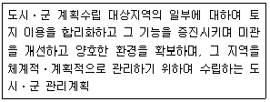
- 광역도시계획
- 지구단위계획
- 도시ㆍ군기본계획
- 입지규제최소구역계획
(정답률: 73%)
94. 공동주택 중심의 양호한 주거환경을 보호하기 위하여 주거지역을 세분하여 지정하는 지역은?
- 제1종 전용주거지역
- 제2종 전용주거지역
- 제1종 일반주거지역
- 제2종 일반주거지역
(정답률: 64%)
95. 문화 및 집회시설 중 공연장의 개별관람석의 출구에 관한 설명으로 옳지 않은 것은? (단, 개별관람석의 바닥면적은 500m2인 경우)
- 각 출구의 유효너비는 0.9m 이상으로 한다.
- 출구는 관람석별로 2개소 이상 설치하여야 한다.
- 개별관람석 출구의 유효너비의 합계는 3.0m 이상이어야 한다.
- 바깥쪽으로의 출구로 쓰이는 문은 안여닫이로 하여서는 아니 된다.
(정답률: 56%)
96. 지하식 또는 건축물식 노외주차장의 차로에 관한 기준내용으로 옳지 않은 것은?
- 높이는 주차 바닥면으로부터 2.3m 이상으로 하여야 한다.
- 경사로의 종단경사도는 직선부분에서는 17%를 초과 하여서는 아니 된다.
- 곡선 부분은 자동차가 4m 이상의 내변반경으로 회전할 수 있도록 하여야 한다.
- 주차대수 규모가 50대 이상인 경우의 경사로는 너비 6m 이상인 2차로를 확보하거나 진입차로와 진출차로를 분리하여야 한다.
(정답률: 63%)
97. 다음은 노외주차장의 설치에 관한 계획기준 내용이다. ( )안에 알맞은 것은?
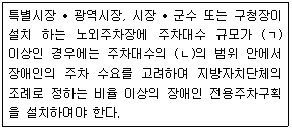
- ㉠ 50대, ㉡ 1%부터 3%까지
- ㉠ 50대, ㉡ 2%부터 4%까지
- ㉠ 100대, ㉡ 1%부터 3%까지
- ㉠ 100대, ㉡ 2%부터 4%까지
(정답률: 56%)
98. 공작물을 축조할 때 특별자치시장ㆍ특별자치도지사 또는 시장ㆍ군수ㆍ구청장에게 신고를 하여야 하는 대상 공작물 기준으로 옳지 않은 것은?(오류 신고가 접수된 문제입니다. 반드시 정답과 해설을 확인하시기 바랍니다.)
- 높이 2m를 넘는 담장
- 높이 4m를 넘는 굴뚝
- 높이 4m를 넘는 광고탑
- 높이 6m를 넘는 장식탑
(정답률: 62%)
99. 건축물의 대지는 원칙적으로 최소 얼마 이상이 도로에 접하여야 하는가? (단, 자동차만의 통행에 사용되는 도로는 제외)
- 1m
- 2m
- 3m
- 4m
(정답률: 73%)
100. 높이 31m를 넘는 각 층의 바닥면적 중 최대 바닥면적이 3,500m2인 종합병원에 설치하여야 할 비상용 승강기의 최소대수는?
- 1대
- 2대
- 3대
- 4대
(정답률: 53%)